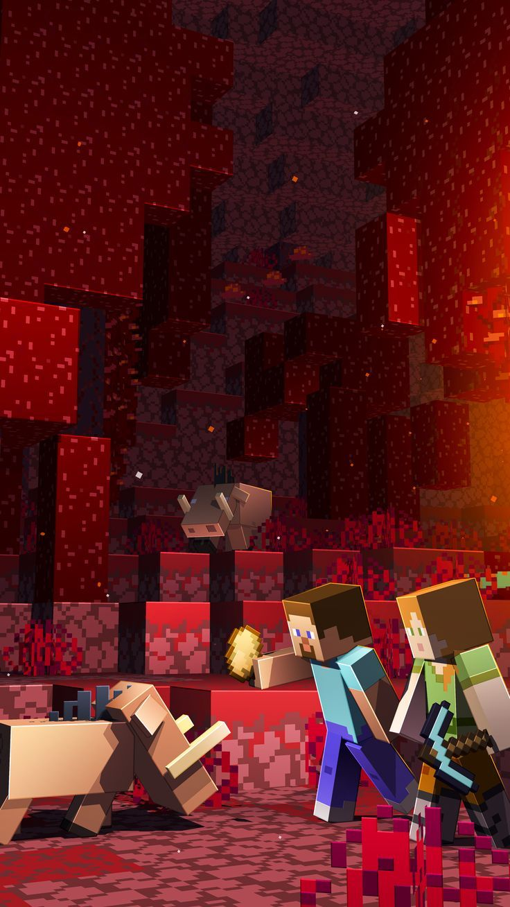
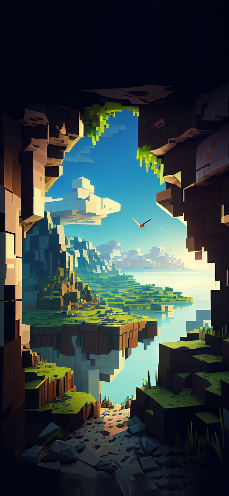
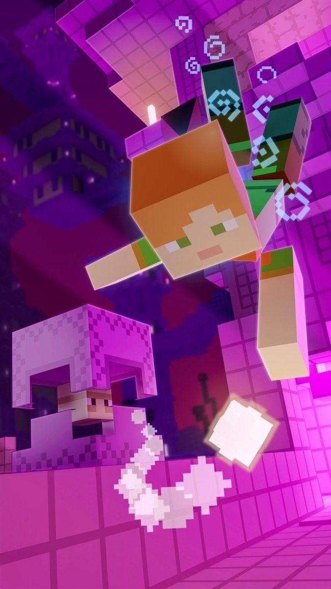

MINECRAFT
É um jogo de construção e sobrevivência desenvolvido
pela Mojang Studios, lançado oficialmente em
2011.
O jogo se passa em um mundo tridimensional gerado proceduralmente, onde
os jogadores podem
explorar, extrair recursos, criar ferramentas
e construir estruturas de qualquer tamanho e
complexidade.
Dimensões
  são uma variedade de modos exclusivos para a Edição de Console Legado do Minecraft. Os minijogos podem ser jogados sozinho, em tela dividida no mesmo console, online ou com outro console. Os três minijogos atualmente disponíveis em todas as versões da Edição de Console Legado são Battle, Tumble e Glide. Antes de cada partida, todos os jogadores podem explorar livremente um lobby e interagir com vários itens, como arcos, varas de pesca, armaduras, cabeças, élitros e discos musicais. Qualquer jogador que usar uma das seis cabeças no lobby mantém essa cabeça na próxima rodada.